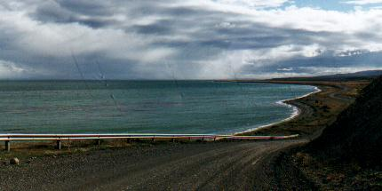
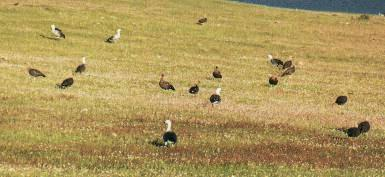
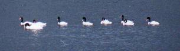
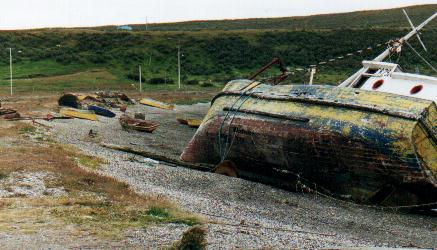
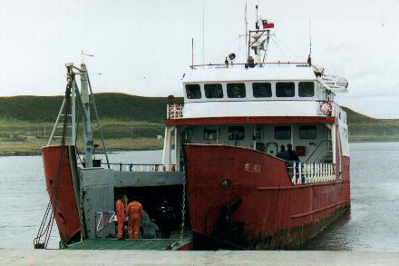
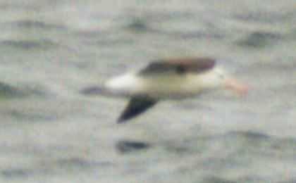
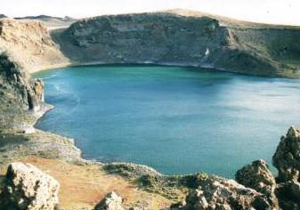
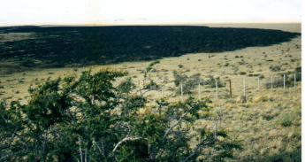

Día 13: Vuelta desde Ushuaia hasta El Porvenir (Chile) (500 km.) Nos despedimos de Ushuaia, muy tristes dado lo bien que la habíamos pasamos aquí. Dejamos atrás la casita en el bosque, el Canal de Beagle, el Monte Olivia, y el Paso Garibaldi. Pasamos la Ea. Viamonte y el puente sobre el Río Grande. Nos detuvimos a comer en Cabo Domingo, otro de los cabos que da al Atlántico. A causa del viento no fue una parada muy agradable, y menos aún al advertir que se está construyendo un puente de acceso (¿para fines portuarios?) hacia un pequeño islote, a unos 500 m de la costa. Se lo veía cubierto de guano: señal que es un sitio de nidificación de aves costeras. Otra casa-cuna que se pierde… Al llegar a San Sebastián nos propusimos encontrar playeros, pero apenas vimos un grupito de 10 o 20 de las dos especies más comunes. ¿Exagero si digo que el ornitólogo que vista San Sebastián no espera encontrar menos de 100.000 individuos, conformado por varias especies distintas? Luego de hacer aduanas, entramos en Chile. En vez de ir ahora hacia el norte, tomaríamos otro camino hacia el oeste, de ripio muy bien mantenido. Cruzamos así la isla, y pronto divisamos el mar: era la Bahía Inútil, nombrada así por los españoles debido a que sus peligrosas restingas rocosas no permiten hacer puerto. Aquí también junté caracoles, y luego seguimos. Ya cerca de El Porvenir, al internarnos tierra adentro, pasamos por una hermosa laguna repleta de Cisnes Cuello Negro, patos y muchos Cauquenes. Finalmente arribamos a este encantador poblado, el más importante de la Tierra del Fuego chilena. Una recorrida por sus calles nos permitió apreciar un interesante estilo arquitectónico. Si bien los materiales eran modestos (techos de chapa), los constructores habían logrado en muchas de las casas una notable personalidad y estilo.  Bahía Inutil, en costa oeste de la isla  Cauquenes comunes "pastoreando" Hallamos el hotel, descargamos, y, ya casi oscureciendo, nos fuimos a una playa de la pequeña y cerrada bahía de la ciudad, para comer una picadita. Aquí no hice otra cosa que buscar caracoles. Habitualmente, cuando uno levanta caracoles de la costa, algunas valvas se encuentran rotas o deterioradas. Pero aquí no había una sola en buen estado. Pero insistí, caminando por esta playa de piedras angulosas cubiertas de algas, un tanto poluta por que debe recibir la descarga de la ciudad. Hacía mucho frío, y el viento congelaba mis manos mojadas. Estaba motivado por que estas eran aguas casi del Pacífico, y esperaba hallar alguna variedad nueva. De repente encontré un caracol, un simple trofón, pero de una variedad conocida que presenta finísimas lamelas en toda la valva. Cada lamela es un filete que parece porcelana, no más gruesos que una hoja de papel. Ya no tenía el animal adentro, pero curiosamente estaba en estado impecable, a pesar que estas lamelas son tan delicadas y frágiles. De hecho, ya en casa, una se rompió mientras intentaba limpiar el caracol cuidadosamente. Ahora lo mantengo envuelto en múltiples capas de papel tisú. ¿Cómo es que logró sobrevivir en aquella costa agreste en tan buen estado?  Cisnes Cuello Negro en fila india ----- o ----- Día 14: Desde El Porvenir (Chile) hasta Isla Pavón – Cte. Luis Piedrabuena (525 km.) Hoy volveríamos a entrar en Argentina, luego del cruzar
el Estrecho de Magallanes. El ferry salía casi al mediodía,
así que podíamos aprovechar la mañana. Tuvimos la gloriosa oportunidad de ver una pareja en el preciso lugar señalado, que pudimos observar muy bien, aunque demoramos en sacar foto, y se volaron antes de lograr la toma. Intentamos acercarnos pero se mostraron muy desconfiados, y finalmente se fueron volando, cruzando la enorme laguna salada ubicada en este desolado paraje cerca del aeródromo.  Llegamos al embarcadero a hora señalada para tomar el transbordador. Está sobre una amplia y pintoresca bahía, con botes de pesca varados en la playa. Una angosta boca de agua comunicaba la bahía con el Estrecho de Magallanes, que en este tramo tiene muchos kilómetros de ancho. A la distancia vimos grupos de Cormoranes en vuelo bajo sobre el mar verde, dirigiéndose a sus promontorios de anidación.El tiempo sobraba. ¿Qué mejor oportunidad para buscar caracoles? Y no era el único, ya que pude presenciar a otro ser que le interesaban estos mismos bichos: una gaviota tenía un lindo caracol en el pico. Se elevaba unos 10 metros, y dejaba caer su molusco sobre una plataforma de cemento. Tras varios intentos supuestamente partió la valva, y se fue a comer el contenido a un sitio más tranquilo. Me puse a buscar caracoles, alejándome del bullicio del estacionamiento del embarcadero, donde muchos turistas y comerciantes aguardaban la llegada del ferry. Pero aún así no parecía haber muchos caracoles. Aprendí que, si me arrodillaba e inspeccionaba muy de cerca los pocos restos dejados por la fina línea de marea sobre la arena, podía hallar pequeños y hermosos ejemplares de los denominados Xymenopsis. La ciencia aún no sabe diferenciar bien las diversas especies que se cree integran este género, así que no tengo mayor certeza de cuantas especies distintas logré levantar. Pero lo cierto es que esas playas interpretaron mi postura de rezo, y me entregaron lo mejor que tenían. Pero otro también interpretó mis intenciones: Navarro me condujo hacia un lugar extraordinario, a 50 o 100m de allí, repleto de valvas grandes. Lamentablemente la inminente partida del ferry cortó mi tiempo. A toda prisa, apenas pude levantar algunos ejemplares en 2 o 3 minutos de colecta. Desde entonces, y gracias a los caracoles, quedo en contacto con mi nuevo amigo Navarro. El cruce del ferry fue terrífico por dos causas: el viento frío, sumado a la absurda meta que nos propusimos de quedar al aire libre durante las 2 horas y media que duró la travesía. Pero nos habíamos preparado especialmente para esta gélida exposición con dos pares de pantalones, uno colocado encima del otro. Y nos mantuvimos casi siempre en la popa, a mayor resguardo del viento.  Zarpó el ferry. Al pasar por el canal de salida de la bahía, señalé a lo lejos la solitaria silueta de Navarro inspeccionando las conchillas de la costa. Pero mis hijas querían ver toninas y delfines. Habíamos leído que era frecuente encontrarlos en este cruce – pero solo en la zona costera, en los primeros y últimos minutos del cruce. No vimos ninguno, pero el ejercicio valió la pena por la lección que nos dejó: en la naturaleza nada se puede dejar por sentado, por más que uno se sacrifique. Pero que los delfines están, están, y eso constituye la otra cara de la moneda: no siempre es necesario ver un espécimen para regocijarse de la fauna que está presente en los lugares por donde uno transita. Abajo: mi única foto de un Albatros Ceja Negra
que no hace honor a esta maravilla voladora  Nos interesaba también ver aves, y algo vimos: nuestro primer Yunco, volando bajo sobre al agua, aleteando furiosamente, como si fuese un pingüino enano que desafiaba su destino de ser ave no voladora. También vimos pasar muchos Albatros Ceja Negra. Quedé hipnotizado por su rutina de vuelo, y al observarlo olvidaba las quejas de mi cuerpo por el congelamiento al cual lo sentía.Este albatros vuela solitario, planeando bajo sobre el mar. Para optimizar la eficiencia de su vuelo aprovecha algún efecto aerodinámico de la interacción del viento con las olas. De hecho vimos algunos avanzando contra el viento como si nada. Su rutina es así: Luego de planear bajo, aletea un poco. Luego levanta el ala derecha, con lo cual el viento lo hace girar a la izquierda y lo eleva. Allí aprovecha la fuerte brisa para ganar velocidad, y luego desciende nuevamente hacia las olas, con giro a la derecha, donde planea otro poco. Una y otra vez, todos los ejemplares que vi repetían esta danza. Esta es su forma de vida, expuestos a las tormentas de viento, fríos polares, escasez de alimentos y salpicados de agua salada. Y también a días de calma chicha, por que no. En todas estas situaciones se las tiene que ingeniar para sobrevivir. Una adaptación singular destilada a través de miles de generaciones. Y ahora, en apenas dos años, con las nuevas técnicas de pesca utilizando líneas de anzuelo con carnada (que alcanzan 100 km. de largo) se los están llevando a la extinción. En dos años siete especies de albatros se agregaron a la lista de especies en peligro. Cuando solo faltaba media hora para llegar a Punta Arenas el mar su puso totalmente negro. Casi parecía petróleo, pero era solo un efecto óptico causado por las nubes muy oscuras que cubrían la ciudad. Igualmente era muy extraño. En este último tramo perdí la oportunidad de sacar una foto insólita: la de un Petrel Barba Blanca que se acercó al ferry por la popa, volando bajo. Negro, gigante, sobrevoló la zona de espuma que dejaban las hélices del barco, donde las aguas grises tomaban un delicado matiz verdoso. El contraste era ideal para fotografiar. ¡Que pena! ¿Puedes imaginar esa escena instantánea tal como yo la vi? De repente el ferry tocó la costa continental, se abrieron las compuertas, y estábamos circulando por el pavimento. Tras quince minutos de manejo bordeando el mar en dirección norte nos detuvimos por casi una hora en la playa del “Parque Chabunco”. Más caracoles - era una de las últimas posibilidades de juntar en este viaje. Aquí encontré unos hermosos mejillones “Choro”, en perfecto estado. Y desde la costa las chicas tuvieron la suerte de divisar un delfín que asomaba brevemente cada tanto. ¡Eran dos! Posiblemente eran una pareja de Delfínes Oscuros. Retomamos la ruta. Durante 2 o 3 horas bordeamos el estrecho de Magallanes por una ruta esencialmente asfaltada, hasta llegar al mismo puesto fronterizo por donde habíamos entrado a Chile días atrás, en Monte Aymond. A lo largo de esa ruta fue notable fue ver los insistentes carteles colocados en el alambrado que separaba el camino y la costa magallánica: “NO PASAR – CAMPO MINADO”.  Nos despedimos del Estrecho, de Chile e hicimos la aduana Argentina. Y la siguiente parada quedaba ahí nomás: a poca distancia de la frontera, un cartel tentador: “Reserva Geológica”. Se trata de un cráter volcánico lleno de agua, por lo cual se lo conoce como la “Laguna Azul”. Para llegar se transita un camino corto, de apenas 4 o 5 km. que, dado las filosas puntas de roca volcánica que asoman de la huella, no debe tener mucha compasión por las cubiertas de los autos. En el último tramo el camino sube la loma del volcán. Ahí nos bajamos y caminamos hasta el borde del cráter, haciendo un esfuerzo para superar el viento, tan intenso que debe desalentar a más de un visitante. Llegamos al borde y nos conmocionamos de la inmensidad del pozo. Las dimensiones son tales que distorsionan la perspectiva, confundiendo todo intento de asimilar su verdadera forma. La foto tampoco transmite la enorme profundidad que tiene. Abajo, muy abajo, estaban las famosas aguas turquesas y azules, y también las Bandurrias que anidan en las paredes de este gran hueco. Es claro que acercarse al borde es peligroso, por que una ráfaga de viento allí no perdona. Es más, si el viento se detuviese por un instante – ciertamente una sugerencia alocada – con seguridad uno perdería el equilibrio. Es que para estar de pie en ese viento, intenso y sostenido, es necesario adoptar una postura inclinada, recostándose hacia delante o a un costado, a fin de aprovechar la fuerza de la gravedad para que compense el embate contra el cuerpo. El paisaje circundante es también hermoso: una enorme planicie vegetada por pastos secos de ocre claro, salpicado aquí y allá con arbustos de Calafate. A la distancia se ven otros cerros, que seguramente también son volcánicos. Pero lo más curioso es algo que parece ser un ancho río de rocas negras. Efectivamente, es justamente eso: un flujo de lava volcánica que tendrá un millón de años, o tal vez mucho menos. Retomamos el camino de ripio hacia Río Gallegos, donde cenamos. A pesar de la hora – ya eran las 22:30 – continuamos la ruta para llegar a nuestro destino planificado para hoy: el querido camping de Isla Pavón, donde arribamos a la 1 de la mañana.
|